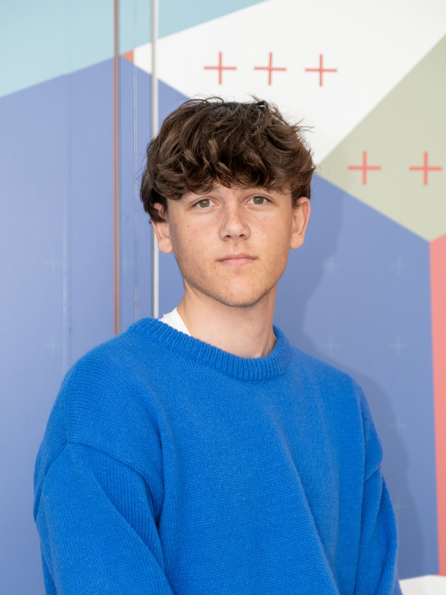

Portfolio Élève-Ingénieur 2026
Ingénierie
Aéronautique
& Spatiale.
Étudiant à l'IPSA Toulouse et actuellement en échange académique à Telkom University (Indonésie). Passionné par les systèmes aérospatiaux et aéronautiques, je développe des projets complets alliant conception mécanique (CAO), intégration électronique et programmation de systèmes embarqués.

Approche & Domaines de Compétences
Mon parcours s'articule autour d'une approche pluridisciplinaire de l'ingénierie : de la modélisation théorique et numérique jusqu'à l'intégration matérielle, le prototypage et la validation expérimentale.
Conception & CAO Mécanique
Modélisation, gestion d'assemblages complexes (+300 pièces), analyse de masse/centrage et rétro-ingénierie sous CATIA V5 et Fusion 360.
Systèmes Embarqués & Contrôle
Architecture électronique, intégration de capteurs/actionneurs et implémentation de lois de commande asservies (PID, MicroPython, C++, Betaflight).
Ouvertures International
Capacité de travail en anglais en environnement international.
Projets réalisés
GreenSky ACV
Développement d'une interface graphique (Tkinter) permettant le calcul de l'Analyse du Cycle de Vie (ACV) d'un objet.
Drone FPV 5"
Montage, câblage et configuration sous Betaflight d'un drone FPV cinématique.
Rover Mecanum
Conception d'un rover autonome (Raspberry Pi Pico) : cinématique omnidirectionnelle, asservissement moteur (PI) et évitement d'obstacles.
Prototypage Arduino
Montage d'un pont en H pour le contrôle de moteur DC.
Conception CATIA V5
De la modélisation à l'assemblage d'un robot de combat (335 pièces).
Machine CNC 1.5m²
Montage d'une fraiseuse, câblage triphasé, commande numérique et conception de fixations.
Conception Fusion 360
Rétro-ingénierie d'une pièce de garage à partir d'une photo et conception d'un porte-téléphone pour drone FPV.